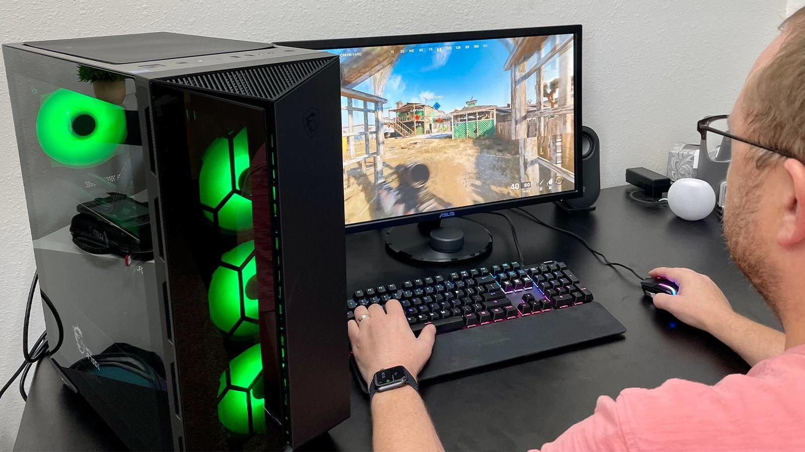
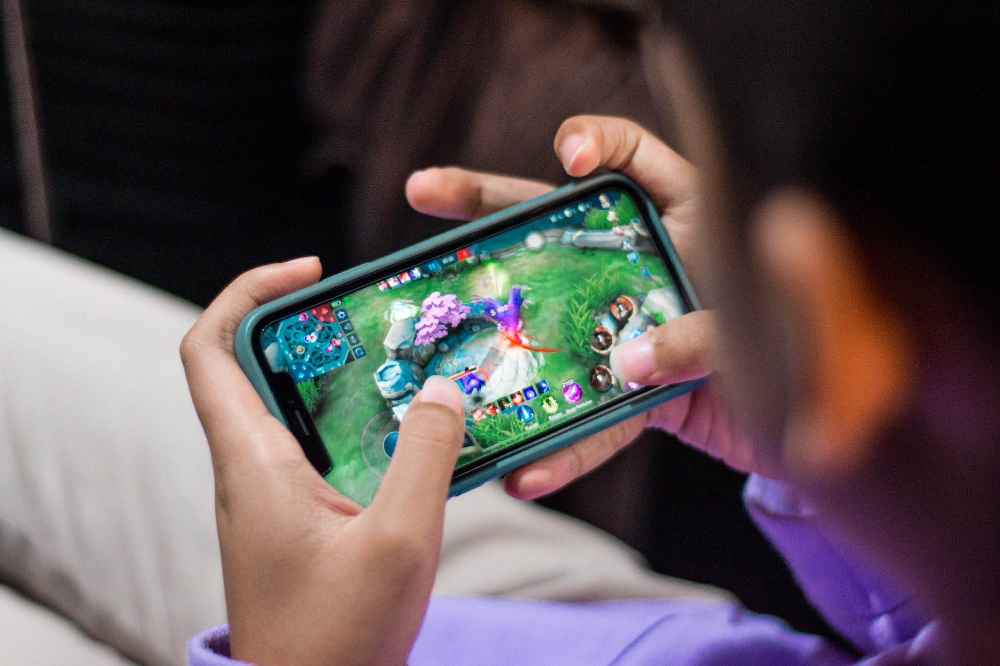
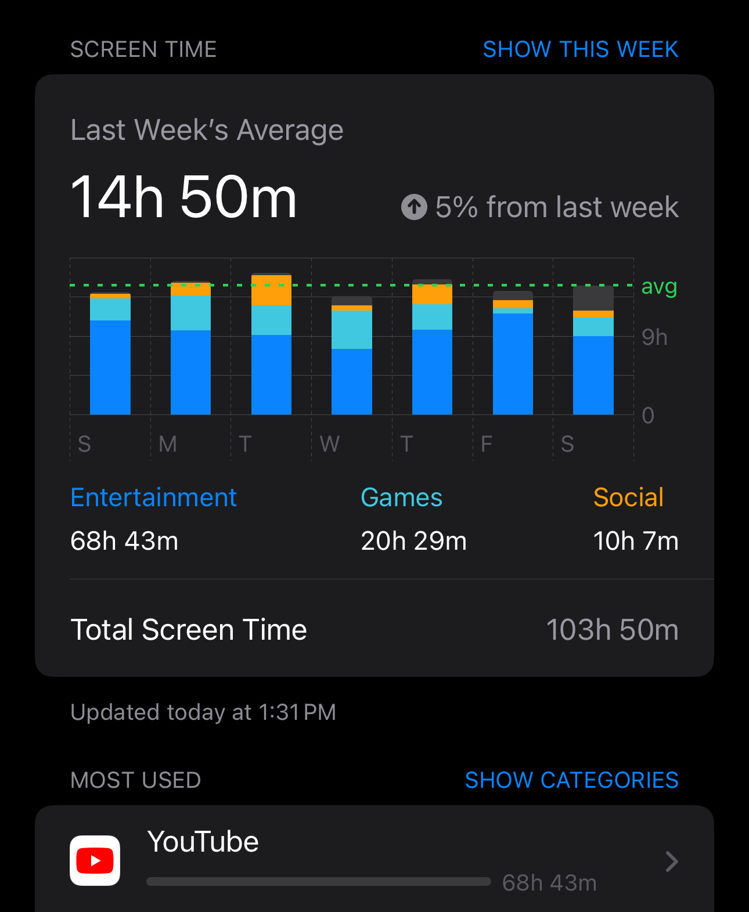

Welcome to my website! This website is about what the title says, "Video Games, and why I like them". In this website, I will be going over a couple things:
Video games are a form of online entertainment. They can range from classical games like Chess, but online, to adventure games like Minecraft (?). Video games can be played on pretty much any device, on your PC, on your phone, etc. They can be played for many different reasons, some to have fun, learn, make money (sometimes) and probably many more reasons for different individuals.  Source  Source
Personally, I've been on screens for a lot of my life. Video games were always something I enjoyed, and since I'd say I'm pretty competitive, there are many good games for me to play, and there's also a large variety. I'm open to playing most games, probably not horror but 90% of other games I will play. The main games I play currently are Geometry Dash and Minecraft, with 500+ hours on Geometry Dash and several thousands on Minecraft, to the point where I don't even have a good estimate. I also spend a lot of my time watching videos on my phone, and I enjoy watching people play games that me myself doesn't play. The main reason why I keep playing video games is because it's a fun way to chat and do things with friends. It doesn't really require meeting up or anything so it's very convenient. 
Video games are a great way to have fun with your friends without needing to move. They're also a good way to do many things like learning or having fun, as mentioned previously. There's plenty of variety so it's hard to get bored too! And personally since I'm a competitive person, video games are fun for me, and could be for you too.